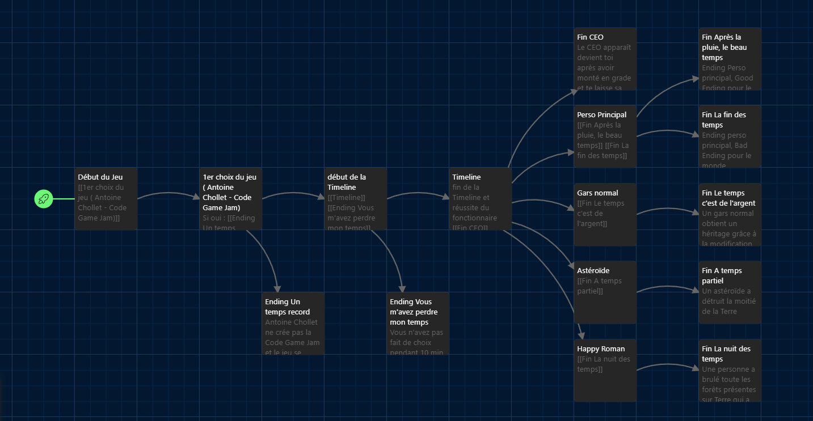
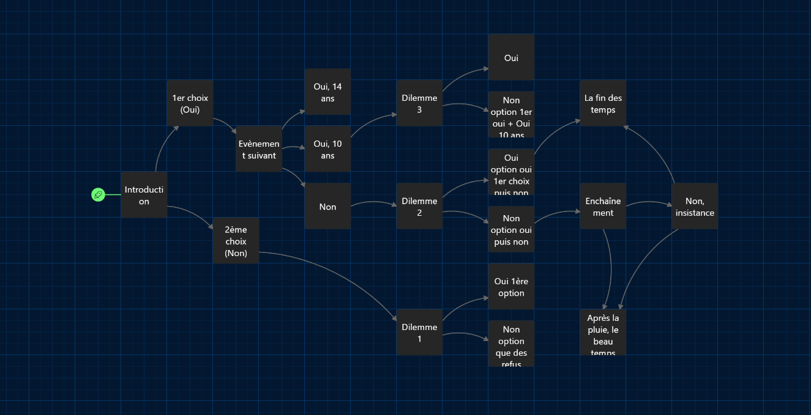
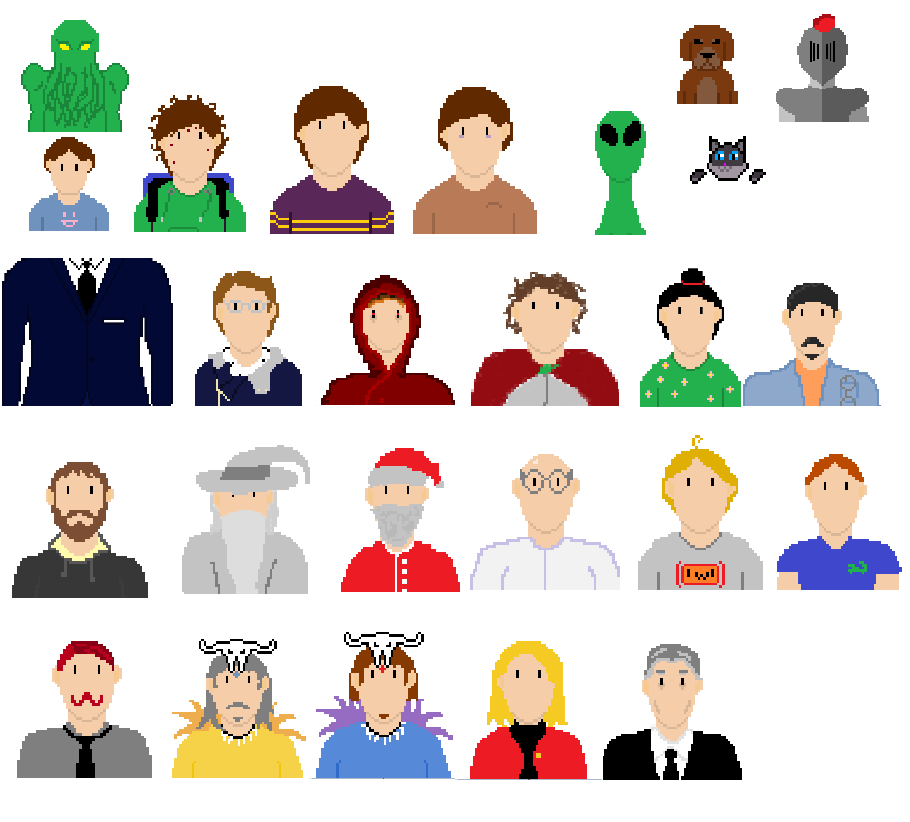
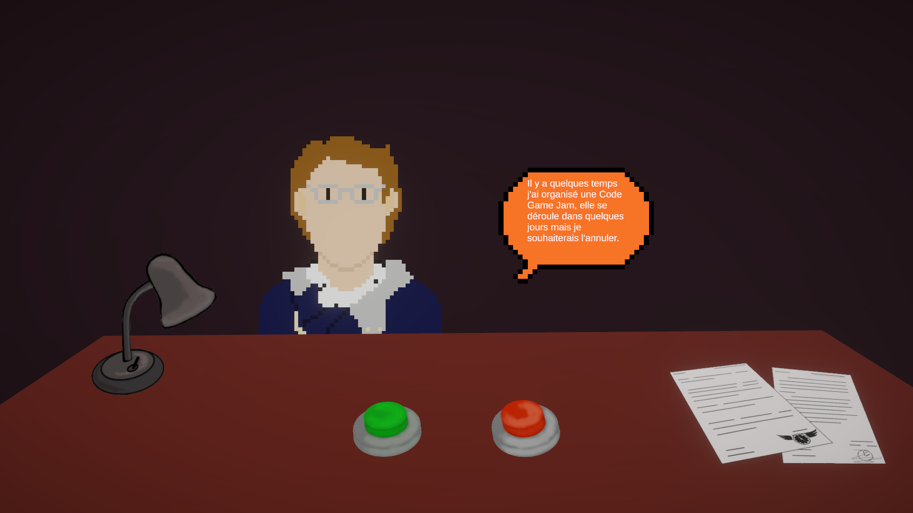
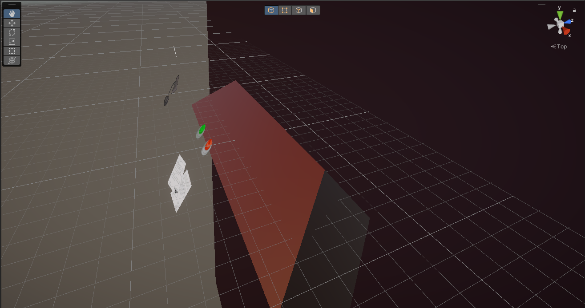
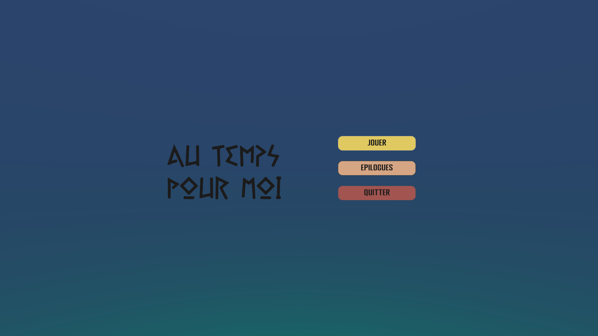

Niveau 1: AC4: Développer des interfaces utilisateurs
Cf. "Menu Principal" et "Point de vue du Joueur"


Du 23 au 25 Janvier 2023
La Code Game Jam est une compétition de création de jeux vidéo à destination d'étudiants en d"veloppement informatique organisée par Antoine Chollet, Enseignant Chercheur du BUT Informatique Montpellier Sète.
Les participants ont alors 30 heures pour pouvoir développer un petit jeu vidéo pour lequel ils ont carte blanche autant d’un point de vue technique (langage de programmation, logiciels utilisés, format du jeu) que graphique (moteur de jeu, boîtes à outils).
Cette année, le thème de la CGJ était : Maître du Temps
Unity et le C#.
Au temps pour Moi est un jeu narratif dans le style de Papers Please. En effet, nous jouons un maître des temps qui choisit le futur et le passé des clients qu'il reçoit. Chaque client vient avec une question ou un besoin de conseil et chaque réponse que donne le joueur influe sur la timeline du client mais aussi du jeu en entier.
Pour vous donner un exemple, dans le tuto du jeu, nous accueillons Antoine Chollet qui regrette d'avoir créé la Code Game Jam et demande au maître du temps de revenir dans le passé pour pouvoir l'annuler. Si le joueur accepte cette demande, le jeu s'arrête. Lorsque le joueur revient sur le jeu, il a débloqué l'ending "Un temps Record".
Une grande partie de l'équipe s'est concentré sur la narration du jeu en faisant des arbres narratifs comme ceux-ci :
 Une autre se concentrait sur les graphismes des personnages du jeu :
De mon côté, je n'ai fait que coder que ce soient les mécaniques du jeu ou les menus du jeu.
Lorsque j'ai participé à cette Code Game Jam, je n'avais qu'une seule semaine d'entraînement sur Unity et seulement sur sa version 3D.
Cependant, nous voulions un jeu en 2D, un premier problème.
J'ai alors utilisé Unity 3D, tout en donnant une illusion de 2D au joueur :
Le point de vue du joueur était comme ceux-ci :
Alors que le jeu était comme ça :
C'est donc ici que j'ai découvert les Raycast mais aussi comment faire des animations pour faire déplacer les personnages vers l'intérieur et l'extérieur du champ de la caméra, grâce aux professionnels qui nous accompagnaient tout au long de l'événement.
Lors de ce projet, j'ai du développé rapidement mes compétences sur le moteur Unity mais aussi C#.
La Code Game Jam m'a aussi appris à gérer mon stress. En effet, étant presque seule à coder le jeu et ne le voyant pas avancer, j'ai plusieurs fois paniqué mais j'ai su me ressaisir afin de rendre un projet "potable".
Le projet est disponible ici (lien itch.io)
Cf. "Menu Principal" et "Point de vue du Joueur"
Tout le jeu a été conçu autour du thème principal du jeu, nous avons donc essayé que le gameplay, l'ambiance et l'histoire du jeu y correspondent le plus possible
Sur ce projet, il fallait en effet respecter le thème tout en faisant un jeu plaisant et ludique aux différents utilisateurs.
L'écosystème du jeu vidéo est très différent de celui que l'on voit en cours (majoritairement web et application java). Cela a été une petite épreuve afin de bien comprendre comment les choses marchent dans ce milieu-là.
Nous avons découpé l'équipe en plusieurs fonctions et rôles (cf. Mise en Place). Cette compétence a donc été bien mobilisée.
Mes compétences interpersonnelles ont été mises à l'épreuve à cause des grands différents de l'équipe sur le projet, la grande pression ressentie, le manque de sommeil et le stress. J'ai dû apprendre à gérer tout cela afin que l'expérience et le projet se passent le mieux possible.